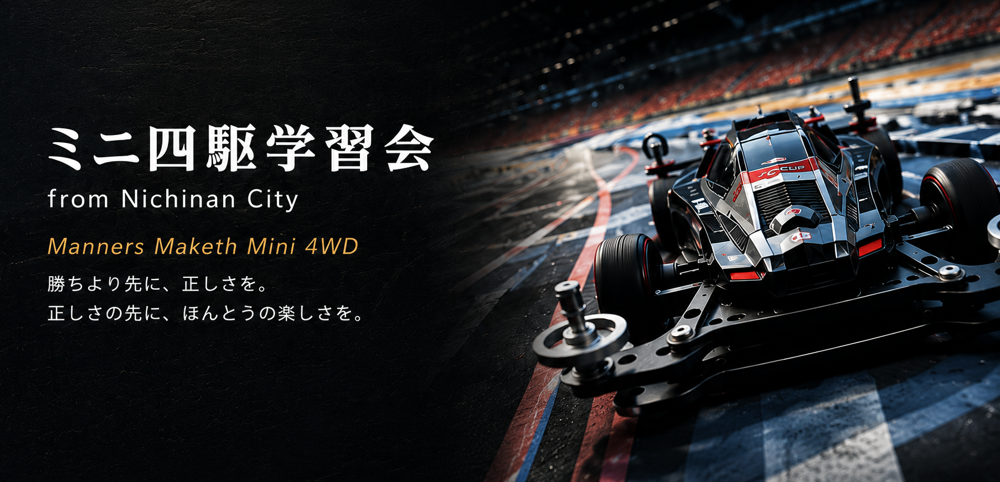

From Nichinan City · Est. Study Club
Scroll ↓
Mini 4WD Lab
ミニ四駆学習会Manners Maketh Mini 4WD
勝ちより和に。正しさを。
正しさの先に、ほんとうの楽しさを。
次回開催
● Now Accepting Soon
Spec12
2027.04 — 開催予定
- Venue
- まなびア（宮崎県日南市）
- Class
- レディース / ジュニア / オープン
- Entry
- クラスにより異なる
- Info
- 詳細は決まり次第お知らせします
Archive
開催記録
Spec1 から続く、これまでの全レースのアーカイブ。
速さは、礼節の先にある。
整えること、待つこと、
讃えること。
— Mini 4WD Study, Nichinan